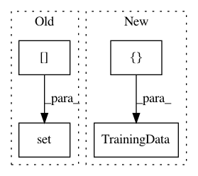

a00769ef51b0b0da7465fe6ce81b6391acc69a89,tests/nlu/featurizers/test_regex_featurizer.py,,test_regex_featurizer_train,#,188
Before Change
message.set(INTENT_ATTRIBUTE, "intent")
tokens = WhitespaceTokenizer().tokenize(sentence)
message.set(TOKENS_NAMES[TEXT_ATTRIBUTE], tokens)
message.set(TOKENS_NAMES[RESPONSE_ATTRIBUTE], tokens)
featurizer.train(
TrainingData([message], regex_features=patterns), RasaNLUModelConfig()
)
After Change
message = Message(sentence)
message.set(RESPONSE_ATTRIBUTE, sentence)
message.set(INTENT_ATTRIBUTE, "intent")
WhitespaceTokenizer().train(TrainingData([message]))
featurizer.train(
TrainingData([message], regex_features=patterns), RasaNLUModelConfig()
In pattern: SUPERPATTERN
Frequency: 3
Non-data size: 4
Instances
Project Name: RasaHQ/rasa
Commit Name: a00769ef51b0b0da7465fe6ce81b6391acc69a89
Time: 2020-01-03
Author: tabergma@gmail.com
File Name: tests/nlu/featurizers/test_regex_featurizer.py
Class Name:
Method Name: test_regex_featurizer_train
Project Name: RasaHQ/rasa
Commit Name: a00769ef51b0b0da7465fe6ce81b6391acc69a89
Time: 2020-01-03
Author: tabergma@gmail.com
File Name: tests/nlu/featurizers/test_count_vectors_featurizer.py
Class Name:
Method Name: test_count_vectors_featurizer_train
Project Name: RasaHQ/rasa
Commit Name: a7fcffb524edc5d44ecf1e6b56cc517f0073b23f
Time: 2020-10-15
Author: f.koerner@rasa.com
File Name: tests/nlu/featurizers/test_convert_featurizer.py
Class Name:
Method Name: test_convert_featurizer_process